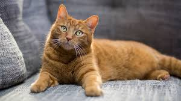
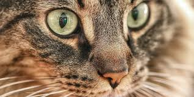
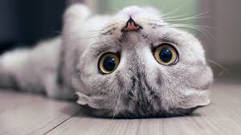

Пухнасті вчителі радості Коти вміють насолоджуватися життям у найдрібніших деталях: сонячному промінчику на підлозі, коробці з-під взуття чи легенькому подряпуванні за вушком. Вони нагадують нам, що щастя не завжди у великих подіях, а в маленьких моментах, які варто помічати щодня. І саме цим вони роблять наш світ теплішим.
Вони вчать радості

Пухнасті чари

Чарівники буденного життя У котів є особливий талант — вони роблять будь-яке житло живим. Навіть найсіріший день перетворюється на маленьку пригоду, коли хтось краде ваш носок або вирішує спати на ноутбуці. Їхня незалежність, поєднана з раптовими хвилинами ніжності, створює ідеальний баланс: вони не надокучають, але завжди поруч, коли ви цього потребуєте.